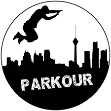

PARKOUR

un cambio en tu vida
un nuevo modo para tu vida cotidiana
El parkour es un deporte de origen francés caracterizado por la superación de todos los obstáculos presentes en un recorrido, dando lugar a que la capacidad motriz sea una de las claves de esta disciplina.
HISTORIA:
La historia del parkour se remonta a los años 80, cuando Raymond y David Belle desarrollaron esta disciplina. Posteriormente, David se trasladó a Lisses. En la comuna francesa, Belle encontró encontró un grupo de jóvenes con sus mismas inquietudes deportivas, dando lugar a que se crease el grupo autodenominado Yamakasi, un término lingala con un significado muy revelador en cuanto a la disciplina: cuerpo fuerte, espíritu fuerte, persona fuerte.
Tras este periodo de creación, consiguió popularizarse años después gracias a la aparición de la disciplina en películas y documentales que tuvieron lugar entre 1990 y 2000.